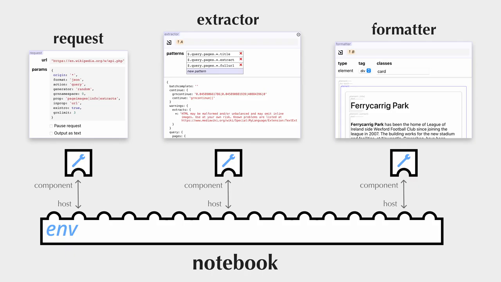
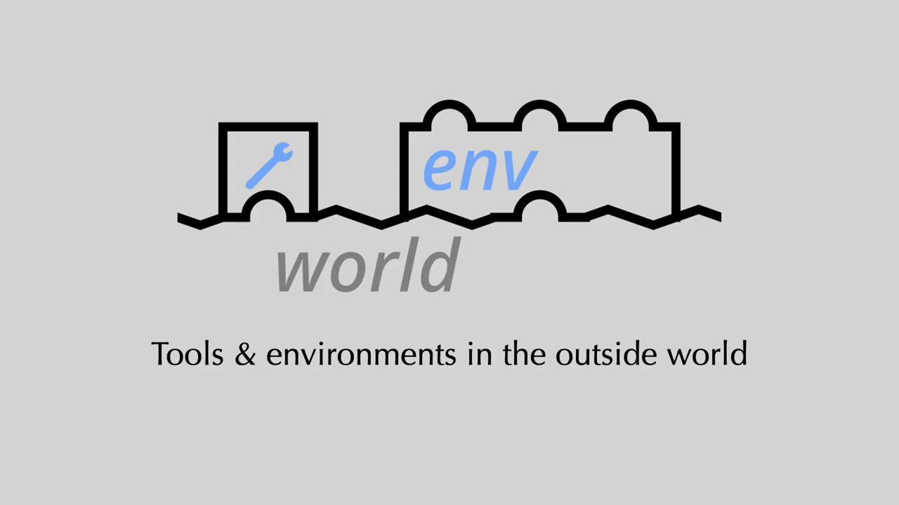

Notes
(0.00) Introduction to Graphed
The lecture introduces Graphed, an API for the web platform that enables the composition of live and rich programming tools and environments. This allows for the creation of diverse programming tasks, from data wrangling to visualization authoring. Real-world programming often requires performing multiple tasks in concert, and Graphed enables the use of live and rich tools together within larger live programming environments.
(16.00) Composition of Live and Rich Tools
Graphed allows for two further forms of composition: embedding environments within each other and embedding environments in the outside world, including conventional code bases. The lecture demonstrates how live and rich tools can be composed together inside live environments within Graphed.
(40.00) Example of Composing Live and Rich Tools
The artist wants to create a website that shows three random Wikipedia articles. They use Graphed Garden, a simple web application that hosts in Graphed components. The artist begins by typing "/notebook" and selects the notebook from the autocomplete menu, which inserts a reactive notebook component into the slot. This notebook is like observable, allowing the artist to query the Wikipedia API and immediately see the results.
(69.00) Extracting Data from the API
The artist uses a request tool to query the Wikipedia API and extracts the data using an extractor component, which is a programming by demonstration tool that lets the artist click on patterns of data to extract it into a simpler structure. The artist then formats the data using a formatted component and adds a bit of HTML for a heading. The final output is looking good, so the artist tests it in GraphGarden's view mode, which runs their notebook invisibly, only displaying the final output.
(149.00) Embedding Tools in Other Environments

The artist could have chosen to build their program in notebook canvas, where pains can be freely positioned in 2D. The same tools are available here. Within GraphGarden, users can pick whatever tools and environments best support their work.
(172.00) Embedding Live Environments Inside Other Live Environments
The lecture demonstrates how live environments can be embedded inside other live environments. This is an image quilt generator built on top of the Art Institute of Chicago's API. The programmer uses a map component to embed a per-item component, which is a second notebook that provides visibility to each step of the process.
(227.00) Embedding Tools in the Outside World

The lecture demonstrates how engrossed tools can be embedded in the outside world. A web app under development in a conventional code base uses the engrossed API to embed a component directly into their code base. The component works with data coming live from the running app, and once the programmer gets results they like, they send the data back to the running app.
(292.00) Conclusion
With the composition engrossed provides, live and rich programming can begin to match the expressivity and broad usefulness of conventional code.
Takeaways
- Graphed is an API for the web platform that allows live and rich programming tools and environments to be composed together.
- Domain-specific live and rich programming tools can support a diversity of programming tasks from data wrangling to visualization authoring.
- Real-world programming requires performing multiple tasks in concert, which Graphed allows by enabling the use of live and rich tools together within larger live programming environments.
- Graphed also enables two further forms of composition: embedding environments within each other, and embedding environments in the outside world, including conventional code bases.
- The artist can use Graphed Garden to create a website that shows a visitor three random Wikipedia articles by composing live and rich tools together within a larger live programming environment.
- The artist can use a reactive notebook to query the Wikipedia API, extract data from the JSON response, and format the data into a simpler structure.
- The tools used in the notebook can be embedded in any environment that supports the Graphed API, and can also be used in other environments such as a notebook canvas.
- Graphed's engrossed component-based API allows recursive embedding of tools and environments, enabling the creation of complex workflows.
- Engrossed tools can be embedded in the outside world, including conventional code bases, using the React integration called use engrossed.
- With Graphed, live and rich programming can begin to match the expressivity and broad usefulness of conventional code.
Glossary
- API (Application Programming Interface): A set of defined rules that enable different applications to communicate with each other.
- Engrossed: A component-based API that allows live and rich programming tools and environments to be composed together.
- Graphed: A web platform that allows live and rich programming tools and environments to be composed together.
- Live and rich programming tools: Domain-specific tools that support a diversity of programming tasks from data wrangling to visualization authoring.
- Live environments: Environments that allow for real-time interaction and feedback.
- Notebook: A type of live environment that allows users to write and execute code in a sequence of cells.
- Notebook canvas: A type of live environment that allows users to freely position components in 2D.
- Request tool: A tool that allows users to make requests to external APIs or services.
- Extractor component: A tool that allows users to extract data from complex data structures.
- Formatter component: A tool that allows users to format data for display.
- Engrossed component-based API: An API that allows recursive embedding of tools and environments.
- React integration: A way to integrate engrossed tools with React applications.
- use engrossed: A React hook that allows users to embed engrossed components in their React applications.